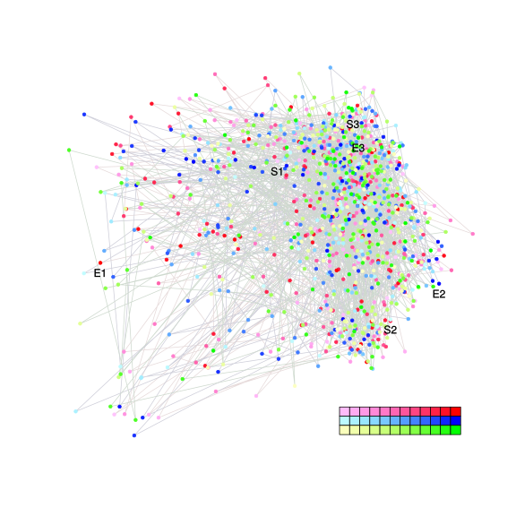
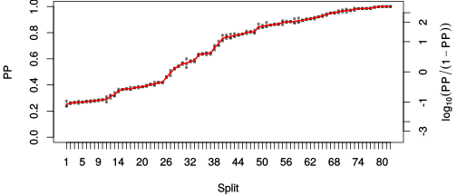
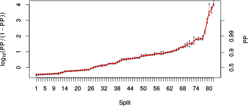

| chain # | burnin | subsample | Iterations (remaining) | command line | subdirectory | directory |
|---|---|---|---|---|---|---|
| 1 | 10000 | 1 | 90000 | /usr/local/bali-phy-3.0-beta2/bin/bali-phy E5_red-blue_clade_aa.fas -s 89345 -S LG -n E5_red-blue_aa | E5_red-blue_aa-1 | /home/willemse/data/trees/BaliPhy/all_E5_aa |
| 2 | 10000 | 1 | 90000 | /usr/local/bali-phy-3.0-beta2/bin/bali-phy E5_red-blue_clade_aa.fas -s 13264 -S LG -n E5_red-blue_aa | E5_red-blue_aa-2 | /home/willemse/data/trees/BaliPhy/all_E5_aa |
| 3 | 10000 | 1 | 90000 | /usr/local/bali-phy-3.0-beta2/bin/bali-phy E5_red-blue_clade_aa.fas -s 45379 -S LG -n E5_red-blue_aa | E5_red-blue_aa-3 | /home/willemse/data/trees/BaliPhy/all_E5_aa |
| P(data|M) = -7129.167 +- 0.416 | Complete sample: 270003 topologies | 95% Bayesian credible interval: 256503 topologies |
Phylogeny Distribution

| Partition support: Summary |
| Partition support graph: SVG |
{kind=link}
| 50% consensus | Newick (+PP) | SVG | |||||
| 66% consensus | Newick (+PP) | SVG | |||||
| 80% consensus | Newick (+PP) | SVG | |||||
| 90% consensus | Newick (+PP) | SVG | |||||
| 95% consensus | Newick (+PP) | SVG | |||||
| 99% consensus | Newick (+PP) | SVG | |||||
| 100% consensus | Newick (+PP) | SVG | |||||
| MAP | Newick (+PP) | SVG | |||||
| greedy | Newick (+PP) | SVG |
{kind=link}
{kind=link}
{kind=link}
{kind=link}
{kind=link}
{kind=link}
{kind=link}
{kind=link}
Alignment Distribution
Partition 1
| Diff | Min. %identity | # Sites | Constant | Informative | ||||
|---|---|---|---|---|---|---|---|---|
| Initial | FASTA | HTML | Diff | 0.735% | 165 | 1 (0.606%) | 162 (98.2%) | |
| Best (WPD) | FASTA | HTML | AU | 0.735% | 371 | 1 (0.27%) | 293 (79%) |
Mixing
{kind=link}
{kind=link}
| burnin (scalar) | ESS (scalar) | ESS (partition) | ASDSF | MSDSF | PSRF-CI80% | PSRF-RCF |
|---|---|---|---|---|---|---|
| 1656 | 1427 | 223.138 | 0.007 | 0.034 | 1.001 | 1.009 |
Projection of RF distances for the first 3 chains3D | Variation of split PPs across chains |
Scalar variables
| Statistic | Median | 95% BCI | ACT | ESS | burnin | PSRF-CI80% | PSRF-RCF |
|---|---|---|---|---|---|---|---|
| prior | -111.1 | (-174.4, -51.65) | 38.94 | 6934 | 877 | 1 | 1.002 |
| prior_A1 | -684.5 | (-738.5, -636.2) | 45.67 | 5912 | 857 | 1 | 1.002 |
| likelihood | -7093 | (-7127, -7060) | 31.53 | 8564 | 711 | 1 | 1 |
| logp | -7205 | (-7264, -7148) | 37.25 | 7249 | 1045 | 1 | 1.003 |
| Heat.beta | 1 | ||||||
| Scale1 | 23.78 | (19.21, 29.01) | 1.682 | 160547 | 114 | 1 | 1.001 |
| S1.F.pi.A | 0.05428 | (0.04351, 0.06563) | 8.221 | 32843 | 485 | 1 | 0.9947 |
| S1.F.pi.R | 0.03861 | (0.02837, 0.04925) | 8.24 | 32766 | 687 | 0.9997 | 0.9969 |
| S1.F.pi.N | 0.02411 | (0.01702, 0.03211) | 7.93 | 34047 | 274 | 0.9997 | 0.9993 |
| S1.F.pi.D | 0.04264 | (0.02986, 0.05642) | 9.843 | 27431 | 270 | 0.9999 | 1 |
| S1.F.pi.C | 0.06683 | (0.05261, 0.08205) | 8.578 | 31477 | 427 | 0.9999 | 1 |
| S1.F.pi.Q | 0.03461 | (0.02625, 0.04384) | 8.805 | 30663 | 299 | 1 | 0.9967 |
| S1.F.pi.E | 0.01807 | (0.01143, 0.02556) | 8.051 | 33536 | 532 | 0.9997 | 0.9997 |
| S1.F.pi.G | 0.06095 | (0.04495, 0.07818) | 12.73 | 21206 | 226 | 1 | 0.9994 |
| S1.F.pi.H | 0.03333 | (0.02476, 0.04279) | 9.203 | 29338 | 1089 | 1 | 0.9964 |
| S1.F.pi.I | 0.054 | (0.04557, 0.06294) | 10.53 | 25644 | 282 | 0.9998 | 0.9991 |
| S1.F.pi.L | 0.174 | (0.1555, 0.1928) | 8.105 | 33313 | 285 | 0.9995 | 0.9998 |
| S1.F.pi.K | 0.02399 | (0.0164, 0.03236) | 8.7 | 31035 | 404 | 1.001 | 1.001 |
| S1.F.pi.M | 0.0206 | (0.0157, 0.02586) | 9.251 | 29185 | 326 | 0.9999 | 0.9979 |
| S1.F.pi.F | 0.06871 | (0.05743, 0.08071) | 11.89 | 22715 | 232 | 1 | 0.9963 |
| S1.F.pi.P | 0.02773 | (0.01808, 0.03838) | 8.723 | 30953 | 450 | 1 | 0.995 |
| S1.F.pi.S | 0.04944 | (0.03921, 0.06031) | 8.589 | 31434 | 131 | 0.9996 | 1 |
| S1.F.pi.T | 0.0706 | (0.0584, 0.08344) | 7.725 | 34953 | 160 | 1.001 | 1.003 |
| S1.F.pi.W | 0.01984 | (0.01278, 0.02765) | 9.381 | 28782 | 794 | 0.9997 | 0.9989 |
| S1.F.pi.Y | 0.03003 | (0.02249, 0.03813) | 8.365 | 32278 | 502 | 0.9999 | 1.004 |
| S1.F.pi.V | 0.08357 | (0.07201, 0.09557) | 9.626 | 28050 | 259 | 0.9999 | 1.005 |
| I1.RS07.meanIndelLengthMinus1 | 4.901 | (3.641, 6.377) | 17.68 | 15268 | 823 | 1 | 1.001 |
| I1.RS07.logLambda | -3.778 | (-4.037, -3.52) | 4.772 | 56580 | 297 | 1 | 1.001 |
| |A1| | 318 | (280, 351) | 189.2 | 1427 | 1656 | 1 | 1.009 |
| #indels1 | 80 | (72, 88) | 36.02 | 7496 | 857 | 0.9091 | 1.001 |
| |indels1| | 455 | (403, 510) | 75.87 | 3558 | 616 | 0.9808 | 1.002 |
| #substs1 | 1324 | (1291, 1353) | 151.9 | 1777 | 1416 | 0.96 | 1.002 |
| Scale1*|T| | 27.09 | (25, 29.26) | 12.77 | 21146 | 270 | 1.001 | 0.9971 |
| |A| | 318 | (280, 351) | 189.2 | 1427 | 1656 | 1 | 1.009 |
| #indels | 80 | (72, 88) | 36.02 | 7496 | 857 | 0.9091 | 1.001 |
| |indels| | 455 | (403, 510) | 75.87 | 3558 | 616 | 0.9808 | 1.002 |
| #substs | 1324 | (1291, 1353) | 151.9 | 1777 | 1416 | 0.96 | 1.002 |
| |T| | 1.14 | (0.928, 1.368) | 1 | 270003 | 132 | 0.9999 | 1 |